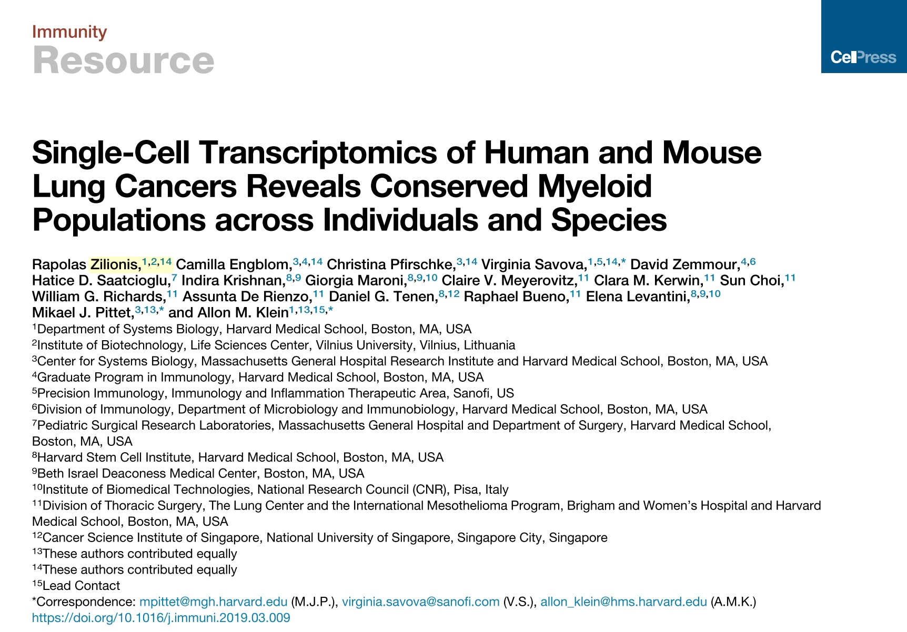
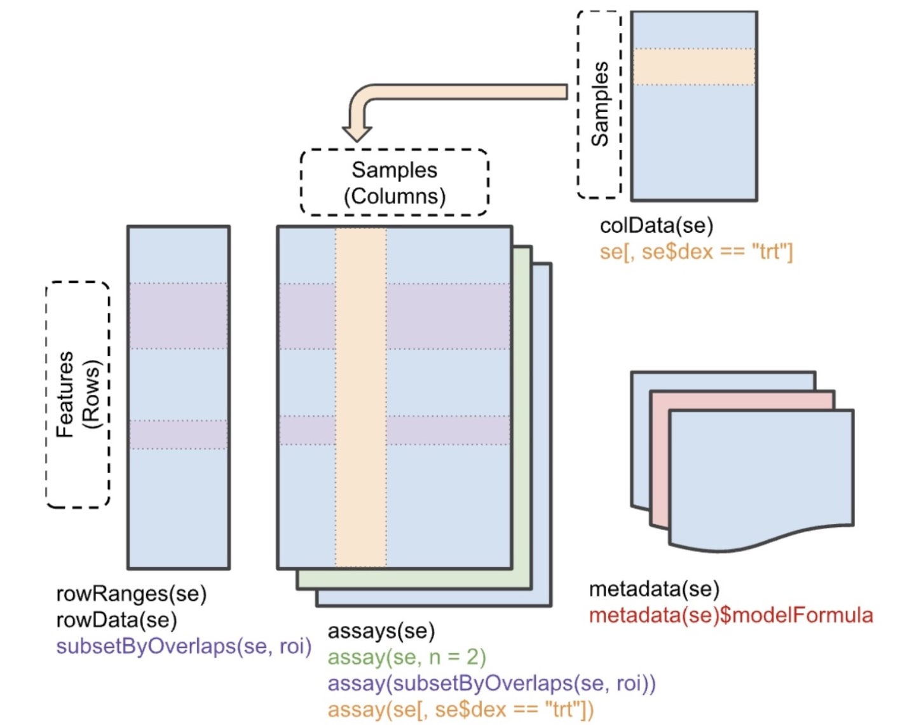
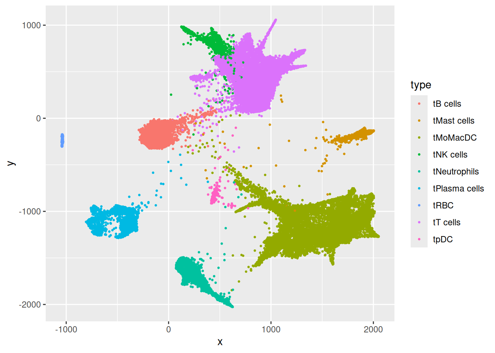
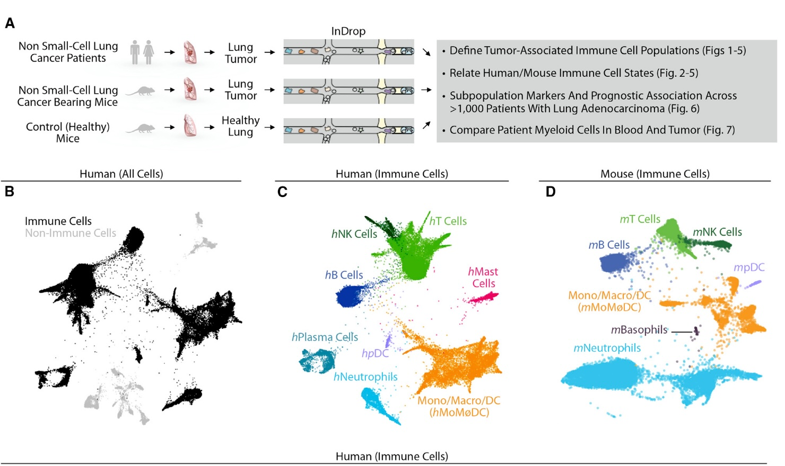

3 Data structure concepts for genomic analysis
3.1 Self-descriptive data structures
3.1.1 Example: bulk RNA-seq analysis of smooth muscle treated with dexamethasone
See the rnaSeqGene workflow for a very comprehensive treatment of the analysis of a designed experiment, treating smooth muscle cells with dexamethasone (pubmed link to original study.
3.1.2 Example: Zilionis Single-Cell RNA-seq in lung

The data are available in the Bioconductor scRNAseq package.
zil = ZilionisLungData()zil
## class: SingleCellExperiment
## dim: 41861 173954
## metadata(0):
## assays(1): counts
## rownames(41861): 5S_rRNA 5_8S_rRNA ... snosnR66 uc_338
## rowData names(0):
## colnames(173954): bcIIOD bcHTNA ... bcELDH bcFGGM
## colData names(16): Library Barcode ... used_in_NSCLC_non_immune
## used_in_blood
## reducedDimNames(5): SPRING_NSCLC_all_cells
## SPRING_NSCLC_and_blood_immune SPRING_NSCLC_immune
## SPRING_NSCLC_non_immune SPRING_blood
## mainExpName: NULL
## altExpNames(0):3.1.2.1 Why is this “self-descriptive”?
“Mentioning” it to the R interpreter yields rich information about the content
- Number of features measured
- Number of cells
- Sketch of feature and sample (cell) annotation
- Sketch of “dimension reduction” resources recorded
- optional metadata
As you work with the data structure, you can add content and save to a checkpoint if desired.
3.1.2.2 Excursus: classes and methods
zil is an instance of the SingleCellExperiment class. This is derived from SummarizedExperiment, and we will start with that.

This data structure is designed to deal with the coordination of multiple linked tables. We’ll use notation \(G\) for the number of features assayed, \(N\) to denote the number of samples assayed, and \(R\) to denote the number of sample characteristics recorded. Each genomic feature may have \(F\) metadata characteristics recorded. Typical components are
- assays: multiple \(G \times N\) matrices of quantifications
- rowData: a \(G \times F\) table of metadata about assayed features; examples are gene or transcript identifiers and their addresses and functional characteristics
- colData: an \(N \times R\) table of sample characteristics
- metadata: a list of elements characterizing general aspects of the experiment in some way
We can learn about methods for manipulating SummarizedExperiment instances via the methods function. First, note
class(zil)
## [1] "SingleCellExperiment"
## attr(,"package")
## [1] "SingleCellExperiment"
is(zil, "SummarizedExperiment")
## [1] TRUEWe say that zil inherits from SummarizedExperiment. Ordinary R functions can be applied to zil, but Bioconductor’s approach uses “S4 object-oriented programming” to improve reliability and verifiability of operations with SummarizedExperiment instances. This means that a number of computations of generic interest have been defined as “S4 methods”. We can learn about them within R:
This is telling us that the syntax assay(zil) makes sense, and so does assay(zil,1) and assay(zil, "counts").
3.1.2.2.1 How does this represent useful binding of metadata to data?
We can easily learn about the “design” underlying the data with some shortcuts:
table(zil$Patient, zil$Tissue)
##
## blood tumor
## p1 12763 21243
## p2 15826 14873
## p3 8165 30794
## p4 4906 11907
## p5 0 14049
## p6 3964 11300
## p7 6981 17183We can also quickly set up a visualization to confirm connection with the publication.
library(ggplot2)
rd = as.data.frame(reducedDims(zil)[[3]])
rd = cbind(rd, type = zil$`Major cell type`)
rdp = na.omit(rd) # many cells not used
ggplot(rdp, aes(x=x, y=y, colour=type)) + geom_point(size=.5)
Compare the actual figure in the paper:

Exercises
- Explain the following update to rd:
rd = cbind(rd, csf1r=assay(zil)["CSF1R",])- Explain the result of
plot(y~x, data=rdp[rdp$csf1r>2,]), after updatingrdas above and repeating the step that producedrdpfromrdabove.